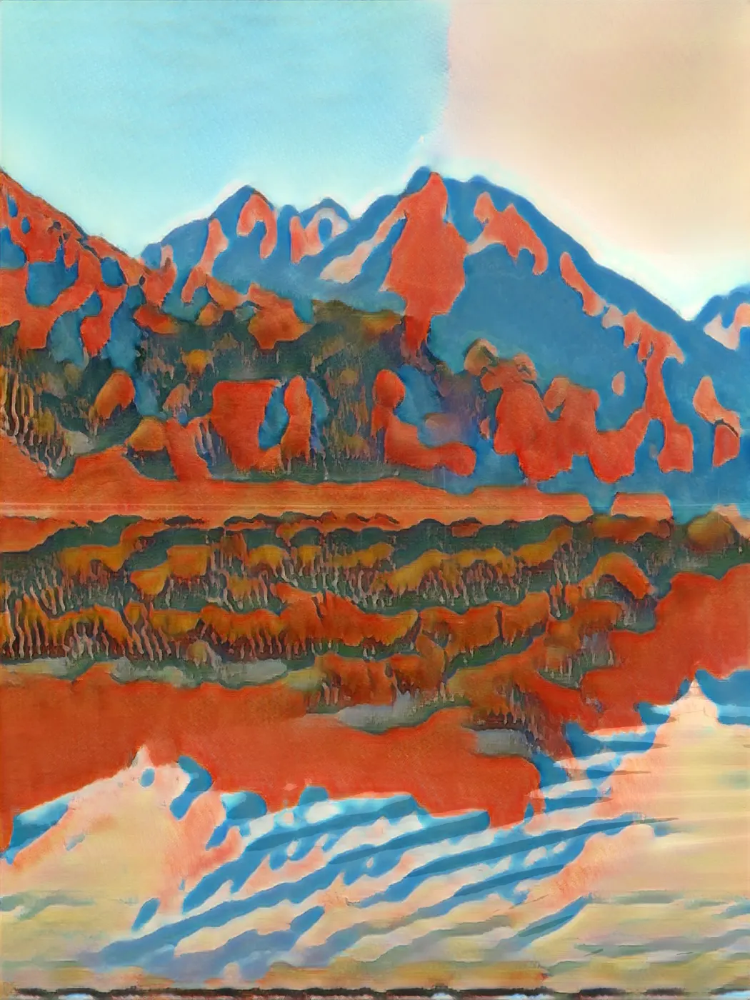
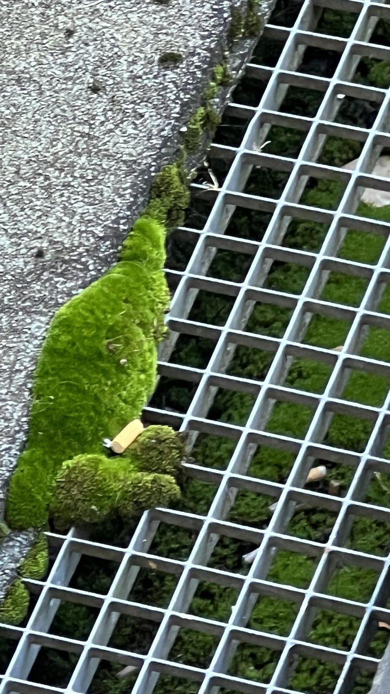

CLVSTR / Recherches choisies
Studies.
Identités, éditions et images en recherche.
6 recherches choisiesSignes
Illustration · répertoire graphique / 1 composition
Figures, animaux et signes en une composition.
Multimum
Identité · matière / 1 composition
Labradorite, volumes polis et logotype.
Fathaer
Identité · interfaces / 1 affiche
Identité et propositions d’interface.

Ridgeworks
Éditions · affiches / 2 affiches
Photographie minérale et signes typographiques.

Lac d’Estaing
Image · traitement neural / 3 images
Photographies du lac transformées par traitement neural.

Field Notes
Photographie · carnet de terrain / 6 photographies
Mousse, béton, acier, pierre.